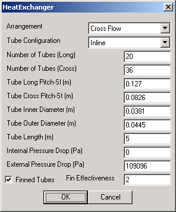

|  | This user interface prompts the user for properties of the heat exchanger unit. These data fields are necessary in order to compute the transfer heat rate effectiveness of the unit. The Internal Pressure Drop field allows the user to specify a desired pressure drop for the water stream as it flows through the module, whereas the External Pressure Drop specifies the change in pressure of the gas stream through the module. The user can also toggle whether the unit uses Finned Tubes and (when toggled) the Fin Effectiveness of those tubes. |